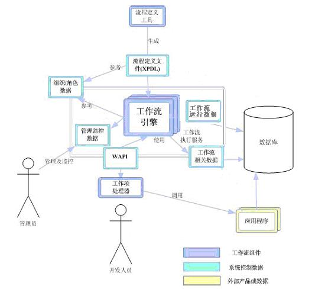
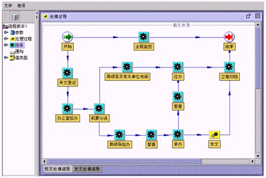
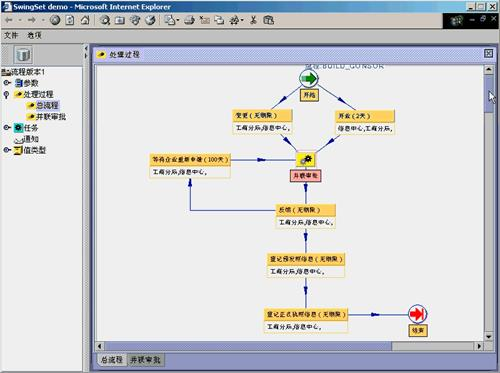
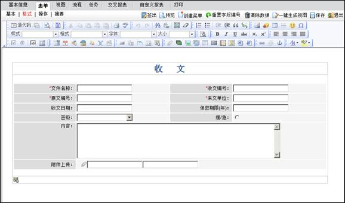
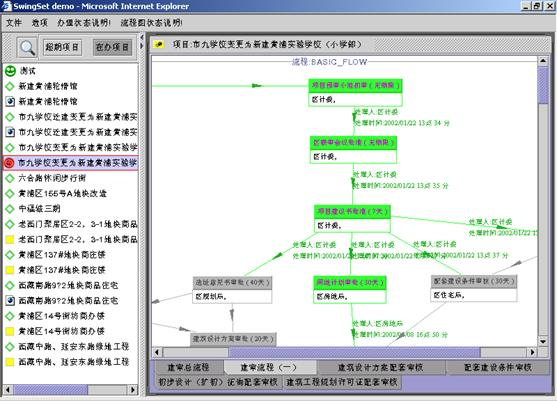

工作流平台（CES Coflow）
工作流平台3.0采用Java B/M/S三层架构开发模式进行开发，工作流定义数据存放在XML文件中（符合WfMC的XPDL规范），确保工作流平台的数据库无关性。工作流引擎部署在服务器端，定义和监视工具通过Applet浏览器方式展示，两者的通讯采用JMS消息机制，整个系统逻辑严密、结构完整、界面流畅、性能稳定，具有很高的通用性和很强的实用性，适用于办公流程、审批流程以及各类特殊的业务流程。
工作流平台3.0的系统框架如下所示：

从上述的架构中可以看出，WfMC（工作流管理组织）对于标准工作流系统的五大接口（流程定义工具，客户端应用接口、内部触发接口、其他工作流交互接口以及管理和监控工具），我司的工作流平台已经基本实现，因而是符合国际标准的成熟工作流系统。
下面对工作流平台中最核心的三部分功能：定义工具、控制引擎、监控工具进行分别介绍：
工作流平台突破了传统工作流定义C/S结构的一贯模式，采用WEB方式实现了流程的图形化定义，通过浏览器访问，客户端无需安装维护，在保证强大定义功能的技术上降低了系统的维护成本。
以下是我司开发的典型流程实例。
文档一体化流程如下：

工商并联审批流程如下：

由于业务流程是自定义的，因此流程节点对应的操作界面（表单）应该也是自定义的，对公文处理系统而言包括拟稿界面、核稿界面、批办界面等，对于档案系统而言包括案卷目录著录界面、文件目录著录界面、卷内文件著录界面等。我司的工作流平台集成了功能强大的表单自定义工具，在WEB模式下可以对各流程节点的界面进行自定义（对应底层的业务类型自定义和数据库表结构自定义）：

在工作流平台3.0版中，总共支持13种业务操作，还可以根据用户的实际情况进行扩展：
- 办理：对当前节点的业务记录进行相应的办理，和业务信息点有关，在应用中具体设计；
- 转办：将当前节点的任务转给别人；转办的同时给转办节点的办理人发通知；
- 回退：将当前节点的任务回退到上一节点，上一节点的任务将重新执行，当前一节点是并流节点或开始节点时不能回退；
- 终止：包括节点终止和流程终止，前者终止当前节点上的任务，相当于单点终止，流程不一定结束；或者相当于多点终止，终止整个流程；
- 暂停/结束暂停：点击暂停，任务处于暂停状态，其他控制菜单项不能操作，菜单项显示结束暂停；点击结束暂停，恢复正常，菜单项显示暂停；
- 不需办理：表示当前任务不需要在当前节点办理，直接发送下一步；
- 申请延期/延期审批：对于节点超期的任务可以申请延期，申请延期只有经过审批同意之后才有效，重新计算超期情况；节点的办理者申请延期需向节点的控制者提交审批，节点的控制者申请延期直接生效；
- 签收：将任务由未办理状态变成待办理状态，签收之后的任务不能再进行回退和撤回操作；
- 授权：将当前任务在当前节点的控制权、操作权和查看权赋予用户，覆盖定义时的缺省值；
- 下一步：将办结的任务发送到下一步，如果流程设置为自动流的模式，直接按照流程定义的情况进行流转，如果设置为手工流的方式，允许用户选择流程的走向、下一步的控制者和操作者等信息；
- 预办：预先办理流程中尚未到达节点上的任务，办理之后不形成台帐；
- 补办：对已经办理结束节点上的任务进行补充办理，如果流程已经结束，不允许补办；
- 撤回：撤回下一节点上尚未办理的任务，撤回任务之后，任务回到前一节点的办理状态。
工作流平台提供了图形化的流程监控界面，通过图形化的监控功能，各级领导和用户能直观查看具体业务的处理过程和当前状态。
用户只需选中左边列出的某个项目，即可查看流程的处理情况。如果是并联审批，可以看到哪些部门已经办理结束、哪些部门正在办理、哪些部门还未办理，在一张图上清楚的反映出来。并且，如果有超期情况，会以红色的标志显示出来。

我司的工作流平台具有以下方面的优势：
- 1. 流程设计的规范化：整个工作流平台设计完全符合国际通用标准，与WFMC一致，这样我们的工作流平台就能实现与别的工作流产品之间进行交互；
- 2. 逻辑定义的智能化：提供定义流程逻辑的功能，改变以前单一的顺序控制方式，用户可以根据一定的流程节点的组合形成符合自己业务特点的业务处理过程；
- 3. 流程定义的简捷化：采用图形化的流程定义工具，用户在简单的鼠标移动过程中形成业务流程的定义；
- 4. 流程控制的人性化：工作流充分考虑了用户个性化业务办公的需要，在与用户交互的界面上为每位用户定制个性化台帐页面，并提供消息处理机制，用户之间可以通过消息传递实现业务的协同办公；
- 5. 流程监控的完全化：对流程运行状态、系统性能和业务处理情况进行全方位监控。结合报表平台，提供统计分析功能，为应用单位优化业务流程提供辅助决策的功能；
- 6. 日志管理的详细化：工作流程管理详细记载每一项目、每一流程节点的操作细节。包括处理时间、操作者、操作等信息。